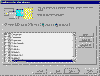
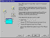
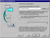
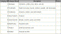
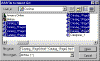
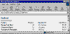
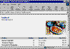

|
| ||
|
| ||
Brought to you by Inside Microsoft FrontPage, a ZD Journals publication. Click here for a free issue  .
.
Part of the strength of FrontPage lies in its integration with other members of the Microsoft Office family. A good example is the ability to put Access 97 data on a Web site. Visitors to the site don't need to have Access installed on their computers to view the data.
The Publish To The Web wizard can publish Access 97 database objects to Web servers using any of three methods. Two of these methods let you dynamically publish your data. Dynamic publishing is like putting a mirror on the Web server that will instantly reflect changes to the underlying database objects. If you want site visitors to see any changes to the database immediately, then you'll want to use either of the dynamic-publishing formats. We'll look dynamic publishing in a future issue of Inside Microsoft FrontPage.
An easier route, which we'll look at in this article, is called static publishing. Static publishing is similar to putting a snapshot of a database object on your Web server. You can publish a table, query, or form as a datasheet -- or the Web version of a printed report. This technique is useful for publishing reports that provide data revisions at regular intervals (say, monthly or quarterly), rather than displaying the most recent change to the database between reports.
In this article, we'll present the basics of static Web publishing using Access 97. You'll see how to publish datasheets and printed reports. Our examples and recommendations will guide you around the pitfalls so you can successfully put this technique to work with a minimum amount of effort.
Visit www.cabinc.win.net  to see working online examples of the Web pages we describe in this article. The Publish To The Web wizard generated all pages at the site in the exact manner we'll describe.
to see working online examples of the Web pages we describe in this article. The Publish To The Web wizard generated all pages at the site in the exact manner we'll describe.
To begin our example project, launch Access and open the sample Northwind database. (It should be in your C:\Program Files\Microsoft Office\Office\Samples directory.) As you can see, this database contains numerous tables, forms, and reports. For our example, we'll statically publish just one table: the Categories table.
Invoke the Publish To The Web wizard by choosing Save As HTML from the File menu. The wizard's first window will ask if you want to use a profile. If you find yourself repeatedly making a nearly identical set of wizard screen selections, you'll save time and effort by creating a profile. (See the sidebar "Using Web Publication Profiles" for a description of this laborsaving approach.) We'll skip this step for now, so click Next.
The wizard's second window is very important: It lets you pick the database object you want to publish. Click the check box beside Categories to select it, as shown in Figure A.

Click image to enlargeFigure A. The second Publish To The Web wizard window lets you select database objects for publication to the Web
Notice that you can select from any of four database object types. When publishing statically, you'll use the datasheet (Tables) representation for those queries and forms that should resemble a table. A datasheet appears by default as a single scrollable window. The Reports format automatically includes pagination that matches the printed report.
You must complete only two other wizard windows to statically publish a datasheet. Click Next twice to advance to the page shown in Figure B. Choose Static HTML and click Next to continue.

Click image to enlargeFigure B. You can select a publishing format for your Access object
Next, you'll need to designate where the file should be saved. Since we haven't created our FrontPage-based Web site yet, we'll save the file temporarily on the Desktop. To do that, type C:\Windows\Desktop in the text field, as Figure C shows. Click Next two more times, then click Finish to export the file.

Click image to enlargeFigure C. We'll save our page on the Desktop prior to importing it into FrontPage
Now, launch FrontPage Explorer and create a new one-page Web called access. We'll use this Web to see how well the wizard did its job.
To bring the datasheet in, choose Import . . . from the File menu. In the Import File To FrontPage Web dialog box, click Add File . . . and navigate to the Desktop. Choose Categories_1.html and click Open. Finally, click OK to return to FrontPage Explorer.
At this point, you should probably rename the imported page. To do so, click on its name and type categories.htm. (By default, FrontPage uses .htm instead of .html as a file extension.)
Now, double-click on the file to open it in FrontPage Editor. As Figure D shows, the Access wizard converted the data into a standard HTML table, which you can edit as desired.

Click image to enlargeFigure D. Our published datasheet looks like this in FrontPage Editor
The original Access table included embedded bitmap images of the product categories in the Picture field. This field appears blank in the published datasheet because the wizard doesn't publish bitmap images. If it's essential to make available embedded images or other embedded objects, you can do so by creating a new table with a Hyperlink data type for the embedded objects; however, this technique is beyond the scope of this article. In any event, you may find it more useful to simply import the required images into your FrontPage-based Web site, then place them within the table.
The Publish To The Web wizard provides built-in features for publishing Access reports to the Web. Instead of creating one long scrollable datasheet, the wizard prepares a series of Web pages with First, Previous, Next, and Last hyperlinks that let you jump from one page to another. These Web pages correspond to the printed pages of a report.
You don't have to perform any special steps to get the benefits that come with reports -- simply select a report as the database object you want to publish. The wizard will respond by including the hyperlinks for jumping between pages.
While the wizard performs many valuable functions, you may have to hand-edit the Web page collection that it generates. First, the wizard doesn't copy any graphics in your reports. Second, if you must delete or add a page to the collection of Web pages generated by the wizard, you'll have to make appropriate revisions to the automatically generated hyperlinks. Third, the wizard doesn't always work well with rigidly formatted layouts, such as order forms. You'll need to develop traditional HTML form solutions for these situations.
You publish a report as you'd publish a table. However, depending on the report you select, you'll end up with more than one file to import. For example, when we published the Catalog report, we had 10 separate HTML files, as Figure E shows.

Click image to enlargeFigure E. When you publish an Access report, you'll have several pages to import into FrontPage
As it does with tables, the wizard creates only bare-bones HTML. However, you can easily improve the pages' appearance in FrontPage. Figures F and G show the kind of improvements you can make in just a few minutes.

Figure F. The Publish To The Web wizard generated the Seafood page from Northwinds' Catalog report

Click image to enlargeFigure G. We edited the raw output to enliven our Web page
The Publish To The Web wizard makes it a snap to create Web sites that publish Access datasheets and printed reports. Beginners should explore the static HTML route to publishing, because the wizard generates the HTML and doesn't require any special ODBC connections. In addition, static publishing is ideal for publishing data at fixed, regular intervals.
Static publishing is one of the best ways to make Access data available to a large audience of Web surfers. This is the case because static publishing places HTML on a Web server; the server, in turn, sends the HTML to site visitors.
Dynamic publishing, in contrast, requires a query of the database engine in order to get the data ready for sending to a browser. Since Access targets workgroup instead of enterprise solutions, it can bog down if thousands of site visitors launch requests at the same time.
The HTML pages the wizard creates are pretty basic, but you can easily edit them in FrontPage. This combination will allow you to publish Access database objects to the Web without perishing in a flurry of HTML code and ODBC connections.
Did you find this material useful? Gripes? Compliments? Suggestions for other articles? Write us!
© 1999 Microsoft Corporation. All rights reserved. Terms of use.